Introduction
Naive Bayes Theorem is one of the most famous theorem governing for modern statistical problem and hence, it also contributes to the development of Machine Learning. In this tutorial, we will introduce the Bayes theorem and how to apply it for classification problems. For those who are not familiar with the platform we use in this tutorial including Google Colab and Jupiter Notebook, please refer to my previous Blog.
Bayes Theorem
Bayes Theorem descibe the probability of an event based on prior knowledge,
which is different with frequencist who don't consider the prior knowledge. The governance equation of Bayes Theorem is conditional probability:

As a classification perspective, if we can calculate the posibility of the sample into each class, we would classify that sample to the highest posibility class
Therefore, Bayes Classifier is known as probabilistic classifier. However, Bayes Theorem is established under the assumption that all the attributes are
conditionally independence. That is why the word Naive come to.

https://jagan-singhh.medium.com/naive-bayes-classifier-99e3e618f8db
Naive Bayes Classifier is famous for Natural Language Processing, especially in Text Classification where the feature matrices are very sparse which is problematic in other Machine Learning algorithm such as Support Vector Machine (SVM), Random Forest, and so on. In order to demonstrate how Naive Bayes Classifier works in detail, let go though the step-by-step example.
Dataset
At first, we use Ford Sentence Classification where the sentences are clasified into 6 classes. 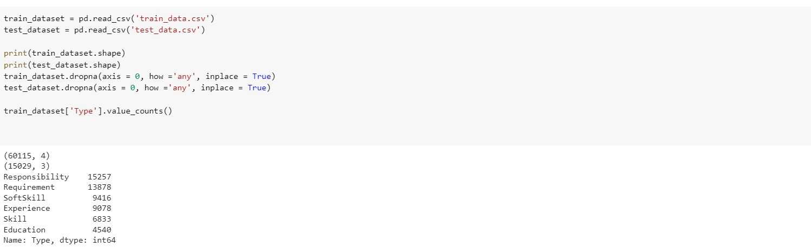However, the dataset only has train set and test set, and the test set does not has class attributes in the table, we have to infer from the sentence_id. 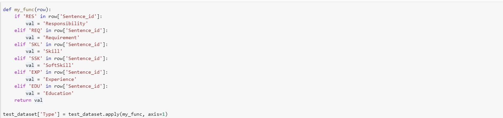
We also need to tokenize the classes into number so that it is easier for later computation process. We will introduce new colum called "class" in the data 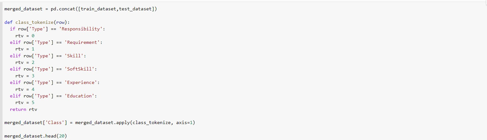 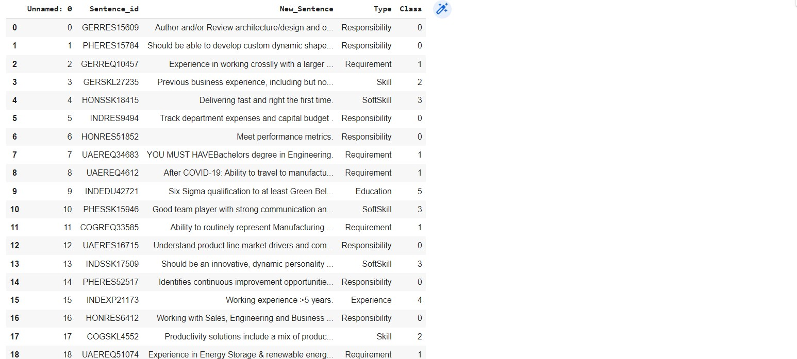
After merging the data, we now spit the data into train set, dev set and test set. The common practice is 6:2:2 where 60% of data is used for training, 20% is used for developing the model and the remaining 20% is for testing. 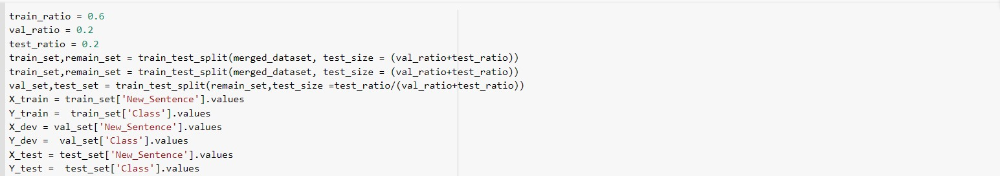
Build the model
In order to build the Naive Bayes Classifier, we have to define the vocabulary of text which we determine as attributes for calculation. The vocabulary should have some information relating to the classes that we want to predict. However, there are several words in our dataset that is hard to analyze word by word. However, there are some word that is meaningless in the English context such as "the", "a","of", "they", etc. That is to say, not all of the words has the meaning to classification problem. Those meaningless words are called Stop Words during the feature extraction process where we split the text into multiple words and consider their existances as features for classification. That is to say, those words exist with the high requency in the text but has no or little information, we call this Inverse Document Frequency (IDF).The English stop words are defined by many libraries. However, we should define our stop words so that we can add or remove the words that are meaningfull or meaningless to the problems.
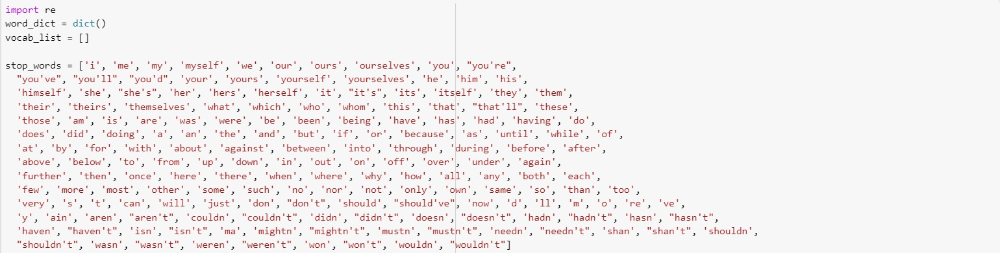After this, we start processing the training set to build the vocabulary list. The first thing is to split the sentence into words with the predefined delimiter. In this exmple, I use " ", "," and "." as the delimiter.
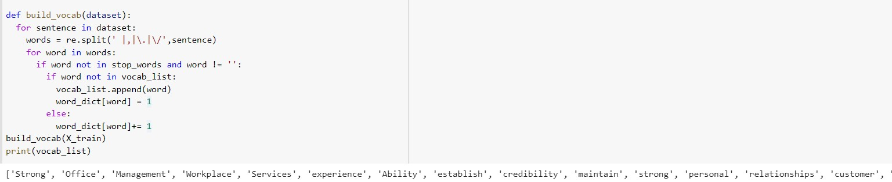Let see how many vocabulary is extracted and their counts
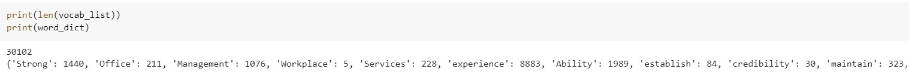
There are more than 30000 vocabs with there fequency varies. That means for some word such as "Strong", there are very common in the data while the word "Workplace"
We actually reduce the vocabulary size 5 times, which significantly reduce the computational cost. For easier for later process, we will tokenize the position of the words, in the features set.
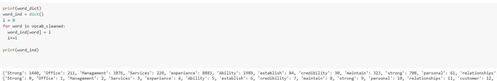Now we start moving to calculating the probability of each word given the classes. First of all, we will accumulate the existance of the word in each class. We also count how many sample for each class in training set which are use to calculate the probability of each class. Note that a lot of values are 0 which is problematics in NBC where the probability would be always 0 beause of the lack of existance in training set.
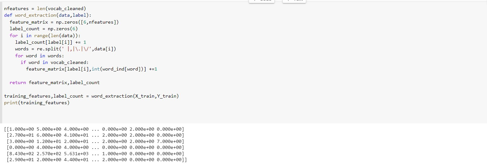Then we can calculate the probability of each word given the class they are in. This should be equal to the number of words in that class divided by the number of sample of this class. And the probability of each class equal to it existance divided by total samples
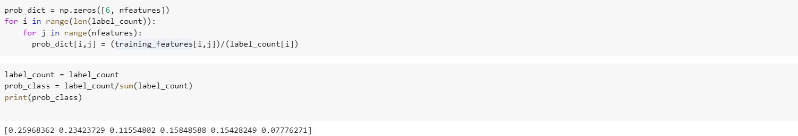Now we can extract the developement dataset as the same way as process the training set
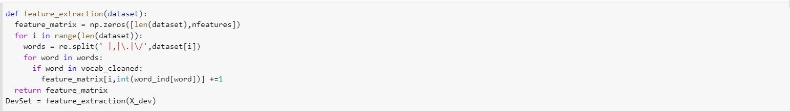In order to predict the class, we need to calculate all the probability of each class given the sample
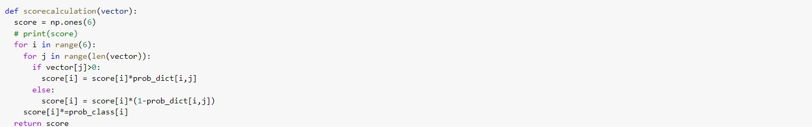Then we will go through the dev dataset and get the performance
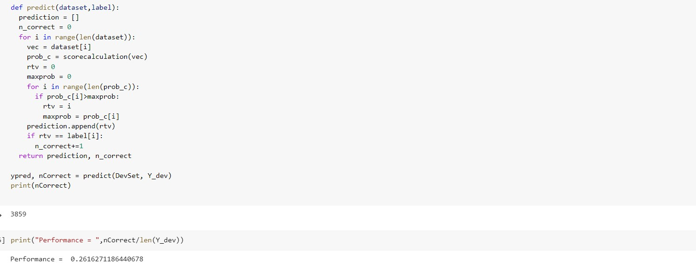The performance is really bad (~26%), but let see how we can improve it using Laplace Smoothing. With the Laplace Smoothing, we will add one more samples for each word in each class, which will give some small possibility for the word in class event the training set does not have it.
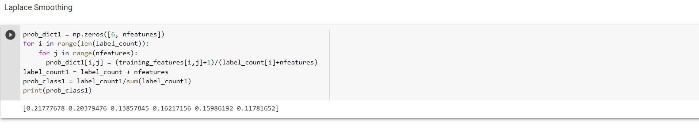With the Laplace Smoothing, let's see how the model predict in our dev set.
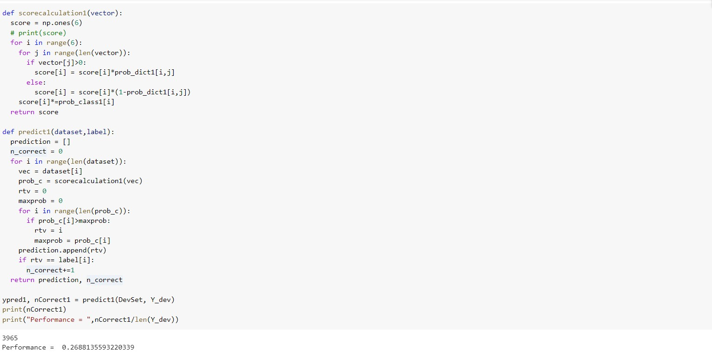With the Laplace Smoothing, the performance is slightly increased to ~27%. Let see how it perform with test set.
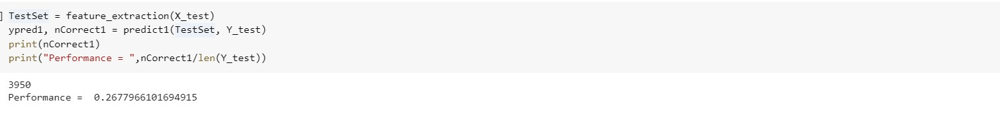Although the performance is really low, but it is consistent from devset and testset and still better than random guess (~17%). We still have many rooms to improve the model in the Challenges and Solution Section
Conclusion
This blog shows you how to build a basic Naive Bayes Classifier for text classification in Google Colab. The code for this tutorial can be found here. The dataset is not well processed and we mostly learn how to process the data, especially in text classifier. Although the performance is really low, I think it's mostly because the vocabulary is not good enough and the dataset is very difficult (the word in each sentence is too little that give us too little information)
Challenges and Solution
I have been facing many challenges in this homework. Some of them have been solved but I could not make it for all of problems. The challenges and proposed solution are below:
Contribution
The Notebook have been developed by Tien Pham with no reference from any code (which is very time consuming to understand the theory, build the code , debug and try with different approach). My contributions are listed below:
References
[1].Rish, Irina. "An empirical study of the naive Bayes classifier." IJCAI 2001 workshop on empirical methods in artificial intelligence. Vol. 3. No. 22. 2001..
[2]. Xu, Shuo, Yan Li, and Zheng Wang. "Bayesian multinomial Naïve Bayes classifier to text classification." Advanced multimedia and ubiquitous engineering. Springer, Singapore, 2017. 347-352..
[3]. Xu, Shuo. "Bayesian Naïve Bayes classifiers to text classification." Journal of Information Science 44.1 (2018): 48-59.
[4]. Zhang, Wei, and Feng Gao. "An improvement to naive bayes for text classification." Procedia Engineering 15 (2011): 2160-2164.